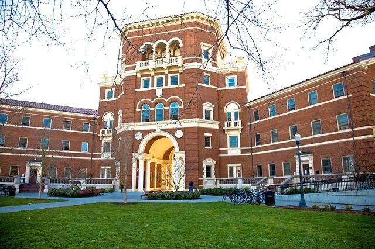
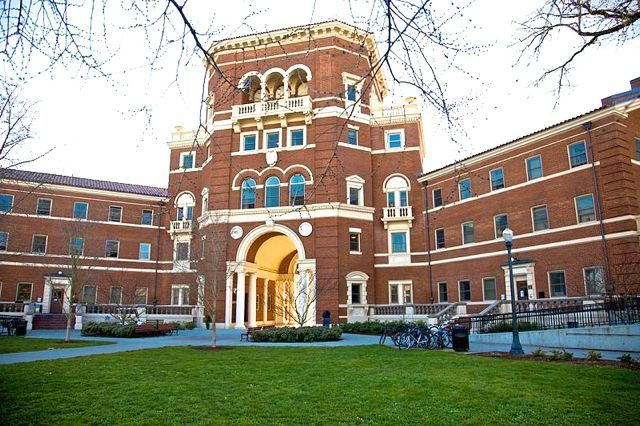

About Me
I grew up in Las Vegas, Nevada, where I lived for the first 18 years of my life. I went to Silverado High School and
graduated top of my class with Advanced Honors. I later moved to Corvallis to attend Oregon State University to study
engineering.
During my freshman year, I lived in Cauthorn Hall and I worked my first job as a food-service worker at West Dining
Center for UHDS. As an out-of-state student, I faced the challenge of not only having to afford college, but to pay
for college all by myself. When I first arrived in Oregon, I had less than two-hundred dollars and so I worked full-time to make ends meet while taking over the full time course load at Linn Benton Community College. Through various outreach, support from friends and advisors, and hard work for financial independence and obtaining scholarships, I am happy to say that I am fully-funded for my undergraduate education.
I have always had an enjoyment and interest learning about chemistry and I had succeeded in chemistry in high school. I was originally in bioengineering my freshman year before switching to chemical engineering. During my freshman
year I would tutor my roommates and friends in their chemistry courses. I realized that most students in engineering
(asides from computer science) had to take some capacity in chemistry and so I realized the importance of having
resources for chemistry. Through my passion for teaching and helping others, I knew I wanted to pursue education.
My sophomore year of college, I was offered three amazing opportunities in education: becoming a Resident Assistant for Hawley-Buxton,
a Learning Assistant for calculus, and a Teaching Assistant for general chemistry. In the engineering dorm, most
engineering students are required to take calculus and chemistry and so I was graced with the opportunity to not only
help instruct in the classroom, but outside of class as well with my residents. I constructed worksheets, formed study
groups, and encouraged my residents to succeed in their studies, specifically chemistry.
My junior year, I will have more opportunities to influence the minds of students and residents. I will be returning as an RA, a TA, and I will be the founder of the very first Supplemental Instructions study table for organic chemistry at OSU. I will be the sole leader for this course for a class size of 500 students taking this amazing science.
The experience and relationships I've formed in residential education, as well as education through academics, made me realize I wanted to pursue higher education to become a better teacher. It is my goal to attend graduate school for chemistry after my undergrad.
To help facilitate my goal, I needed to take the next step in my own education and experiences. I wanted to explore more chemistry on my own and learn what could not be taught in the classroom setting. I joined the Honors College in Winter 2021 to be more involved in research. Additionally, I joined the
Subramanian Research Group to assist solid-state chemistry research as well as the Materials and Discovery Lab to conduct my
own research projects on Metal-Organic Frameworks (MOFs) and their applications. I am currently on track to publish my research on
MOFs in the future.
Hobbies: Learning Chemistry, Drawing, Playing the Flute, Hanging out at DutchBros, Getting getting coffee/lunch/dinner with friends, Volleyball, Rock Climbing
 
